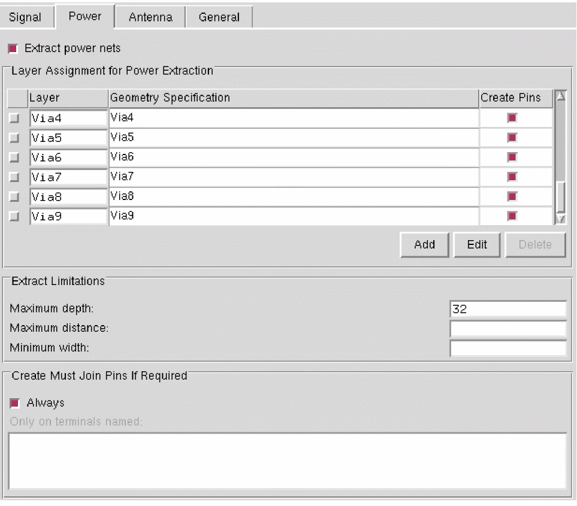
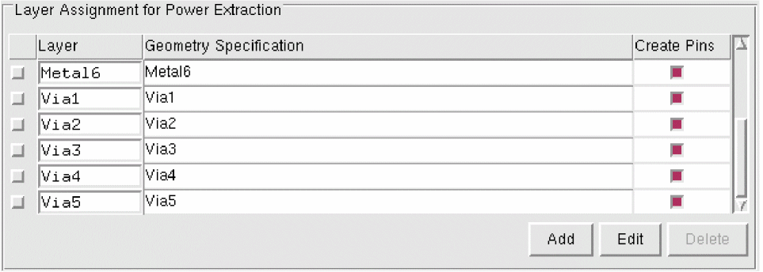
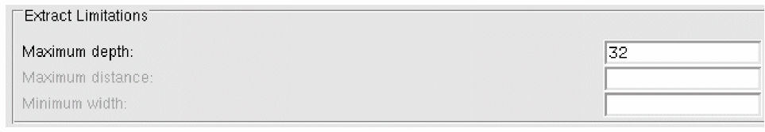

Extracting Power Nets in Standalone Abstract Generator
To access the Power tab in the Running Step Extract form:
-
Choose Flow – Extract and click the Power tab.
 - Select the Extract power nets option to run connectivity extraction for power nets.
-
Use the Layer Assignment for Power Extraction table to specify the geometry or shapes that should be present on a particular layer when power net extraction is performed.
Use this table to specify the Layer on which power net extraction is to be performed. This table becomes active when you select the Extract power nets option. - Set the Geometry Specification for the layers specified in the above table.
-
Select Create Pins to create pins corresponding to the layers specified in the Layers column.
Power net extraction for large blocks can often be slow if pins are created on via layers. This is partly due to the large number of via pins that can be created. If power net extraction takes too long, abort the run, re-extract and do not create pins on via layers. - Use the Add, Edit, and Delete buttons and the G-Spec Builder Form in conjunction with the operators to work with the Layer Assignment for Power Extraction table.
-
Use the Maximum depth, Maximum distance, and Minimum width fields for specifying the extraction limits.
 - The options in the Create Must Join Pins If Required section are applicable only to signal nets.
Related Topics
Return to top